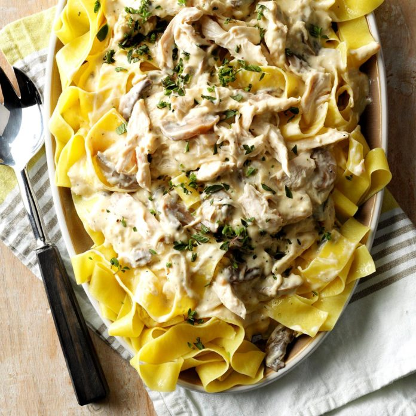

Creamy Italian Chicken

Italian salad dressing mix is like a secret weapon for adding flavor to this creamy chicken dish. Served over rice or pasta, it's rich, delicious and special enough for company.
Prep time=15 mins || Cook time=4 hrs || Total time=4 hrs 15 mins
Ingredients
4 boneless skinless chicken breast halves (6 ounces each)
1 envelope Italian salad dressing mix
1/4 cup water
1 package (8 ounces) cream cheese, softened
1 can (10-3/4 ounces) condensed cream of chicken soup, undiluted
1 can (4 ounces) mushroom stems and pieces, drained
Hot cooked pasta or rice
Minced fresh oregano, optional
Directions
Place the chicken in a 3-qt. slow cooker. Combine salad dressing mix and water; pour over chicken. Cover and cook on low for 3 hours. Remove chicken. Cool slightly; shred meat with two forks. Return to slow cooker.
In a small bowl, beat cream cheese and soup until blended. Stir in mushrooms. Pour over chicken. Cover and cook until chicken is tender, 1 hour longer. Serve with pasta or rice. If desired, sprinkle with oregano.
Nutrition facts
1 serving: 473 calories, 29g fat (14g saturated fat), 158mg cholesterol, 1556mg sodium, 12g carbohydrate (5g sugars, 2g fiber), 40g protein.